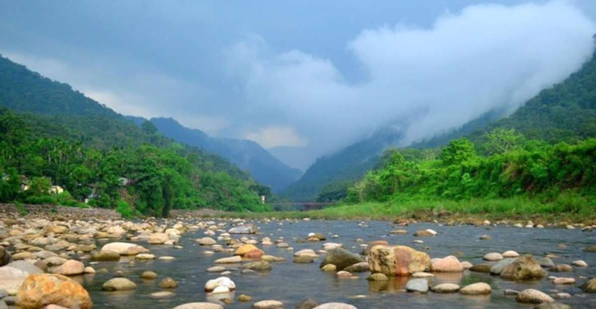

জাফলং ꠎꠣꠚꠟꠋ Hill station Piyain River, Jaflong, Sylhet Jaflong attracts tourists for its natural environment Aakhta Fall, Jaflong Jaflong (Bengali: জাফলং) is a hill station and tourist destination in the Division of Sylhet, Bangladesh. It is located in Gowainghat Upazila of Sylhet District and situated at the border between Bangladesh and the Indian state of Meghalaya, overshadowed by subtropical mountains and rainforests. jaflong is known for its stone collections and is home of the Khasi tribe
Jaflong is a tourist spot in Sylhet division. It is about 60 km from Sylhet town and takes two hours drive to reach there. Jaflong located amidst tea gardens and hills. It is situated beside the river Sari in the lap of Hill Khashia.
In early 2005, Laskar Muqsudur Rahman, Deputy Conservator of Forests, Sylhet Forest Division, observed that Jaflong that he heard in his boyhood as the 'lungs' of Greater Sylhet was at stake due to on going encroachments and establishment of unauthorized stone crushing mills. He took initiatives to recover the land and establish a recreation-cum-botanical park named as 'Jaflong Green Park'. The first foundation stone for the thematic Green Park at Jaflong was laid by Laskar Muqsudur Rahman, Deputy Conservator of Forests in 2005 with the cooperation of local forest staffs led by Forest Ranger Mohammad Ali. Nonetheless, at the inception it was a challenging task due to local conflicts and procedural constraints. The forestation program in Jaflong Green Park has been started under supervision of the joint forces, Jaflong Foundation and Forest Department. They have jointly taken up the forestation program with about 100 hectares of grabbed land. Under the forestation program, various types of trees, including hybrid Akash-moni, are being planted in the park to maintain ecological balance.[6]
